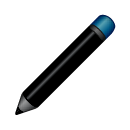

 1. Brush/ Pencil:
This is used to write/draw freehand on the entire canvas. When the user clicks on this icon, the application is in drawing mode. This enables the user to unleash his creativity and draw.
2. Eraser:
Since all of us are humans, we are bound to make mistakes. When the user makes any mistake, the eraser can be used to rectify it. By clicking on the eraser icon, the application enters erase mode. Using the eraser, the user can rub out anything unnecessary.
3. Pencil/Brush Colour:
The user can change the colour of the brush/pencil by making use of this button. It launches a colour picker on selection from which the user can select the shade he requires.
4. Background Colour:
If the user wishes to change the colour of the background, then this is selected. Like the brush/pencil colour, the selection of this launches a colour picker. The user can choose the colour he wants to apply to the background and continue drawing.
5. Full Screen :
Sometimes the icons on the screen might obstruct what is drawn on the canvas. The user can view the entire image without the icons using the Full Screen button. When in Full Screen mode, the user can continue drawing without any hindrance. On clicking the home button in Full Screen mode, the user can go back to the home screen where all the options are present.
6. Refresh :
This button is used to clear the screen. It erases all that is drawn on the canvas. If the user wants to start over, he can make use of this button.
7. Add new page :
This enables the user to add pages to the existing canvas. She can work on two or more pages simultaneously.
8. Delete page:
Using the Delete page button, the user can delete any page that has been added. This doesn’t restrict the user to delete pages in a particular sequence. To delete a page, the user must go to that page and then click on the Delete page button.
9. Previous Page:
The user can go to the previous page using this button.
10. Next Page:
The user can go to the next page by using this button.
11. Save :
This enables the user to save any page as a pdf or image. By clicking on the save button, the user can store the drawing as an image or pdf.